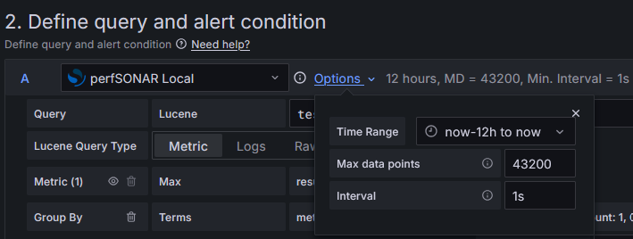
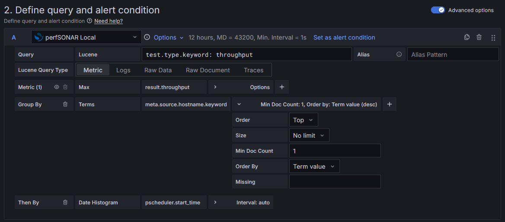
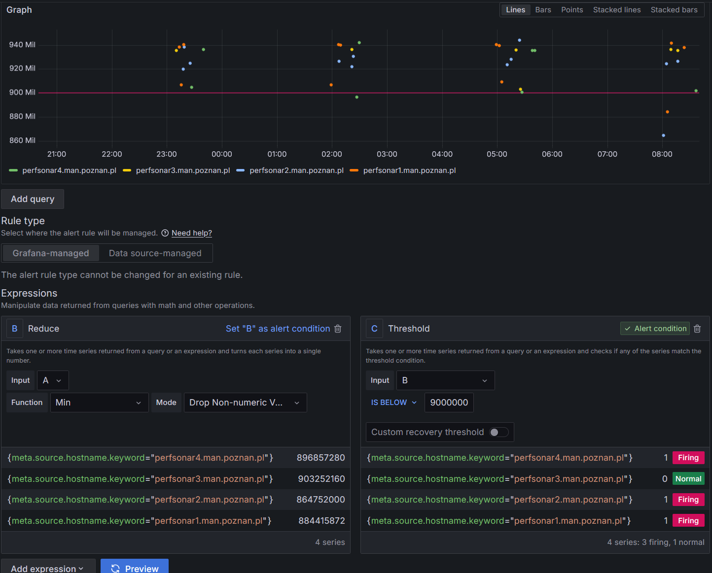
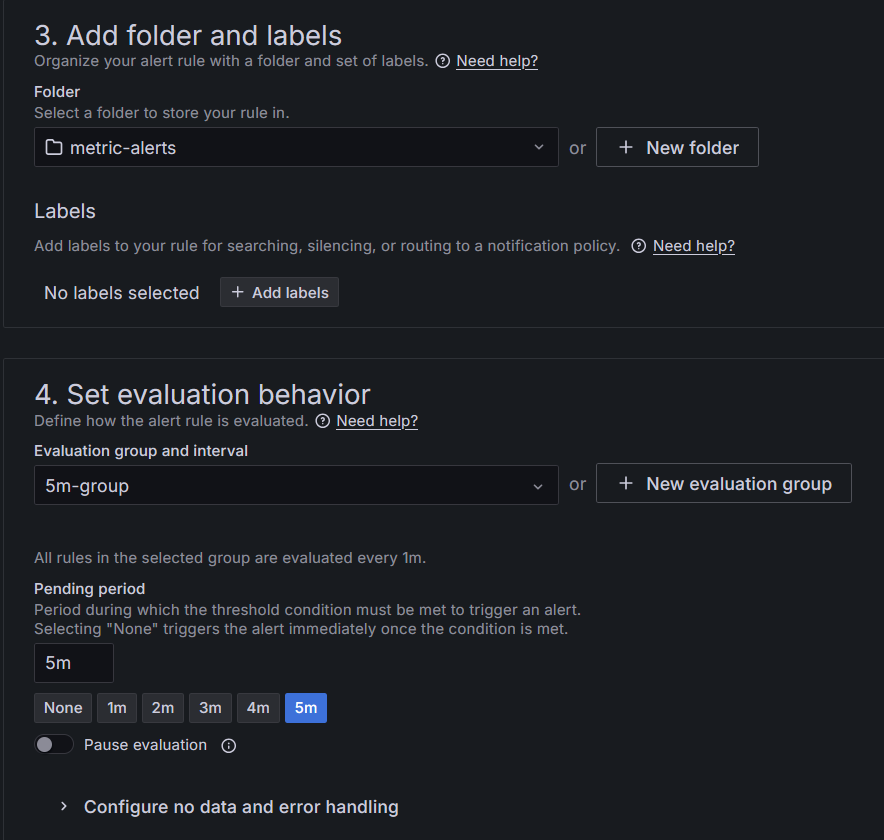

Creating Alerts with Grafana¶
Introduction¶
Grafana Alerting allows you to eliminate the need for manual monitoring and provides an automatic way to be alerted on data. This short introduction will walk through general process of setting up the first alert on an example perfSONAR data. For detailed information refer to Grafana documentation available at https://grafana.com/docs/grafana/latest/.
Getting the Information About Current pSConfig Thresholds¶
If you want to align your alert condition with the current pSConfig thresholds defined for matrix panels look for those settings in the /etc/perfsonar/psconfig/grafana-agent.json file. In the file there is a displays sections which has entries for the different types of tests. For more information see Adjusting Thresholds and Other Parameters.
Creating and Receiving Alerts¶
The simplest scenario includes two steps:
Creating a contact point
Setting up an alert rule
Creating a Contact Point¶
In this step, we set up a new e-mail contact point to make sure notifications are sent to recipients. Follow these steps:
Login as priviledged user to your Grafana instance
Under Alerting section in the main menu click Contact points
Click + Create contact point
Under Name enter a descriptive name for this contact point
Select Email from Integration
Use Addresses field to enter one or more e-mail addresses to send alert notifications to
Save configuration with Save contact point button
Setting Up an Alert Rule¶
Now, we establish an alert rule to notify the user whenever alert rules are triggered. In this section we will build an example alert definition that will trigger an alert whenever a throughput test result is below the threshold value for any source test host over the last 12 hours. For more information about available OpenSearch fields used in this section see Example perfSONAR OpenSearch Fields.
Note
This practical example is used to show how to start working with simple alerting. Grafana lets you define alert rules across multiple data fields, apply different logic and take advantage of specific Grafana Alerting features to accommodate your own requirements and deployment environment. Alerting on perfSONAR data may be implemented in multiple ways far beyond this tutorial. Familiarize yourself with Grafana documentation.
Under Alerting section in the main menu click Alert rules
Click + New alert rule
Under Name enter a descriptive name for this alert rule e.g. perfsonar-throughput-results
In the Define query and alert condition section swith on Advanced options
- Now we define the query, an expression used to manipulate the data and the condition that must be met for the alert to be triggered
Click Options drop-down list to select the Time Range e.g. now-12h to now. This defines the time range for which the data should be fetched during alert evaluation. The alert rule uses then the fetched data to evaluate the alert condition.

Under Query put test.type.keyword: throughput to query for throughput test type records only
Under Metric select the function - Max
- Under Select field select result.throughput to query throughput test result values. The field will autocomplete when you start typing.
Click + to add Group By option and in Terms select meta.source.hostname.keyword. The field will autocomplete when you start typing. This transformation is needed to aggregate data based on source host.
Drill down to options of this query parameter and select No limit from Size

- In the Expressions section:
- Under Reduce expression:
- Make sure Input value is A
Under Function select Min as the value for the reducer function. This option reduces time series values within the selected time range into a single number (minimum throughput from last 12 hours in our example), which is then compared in the alert condition.
- Under Mode select Dron Non-numeric Values. This option filters out null/NaN values before applying the reducer function to avoid missing data points in a series.
- Under Threshold expression:
Make sure Input value is B
Select IS BELOW as the condition
Put a number of your choice (in bits) as the threshold value. This is the value below which the alert rule should triggered.
Make sure Threshold expression is marked green as Alert condition
Click Preview to run the query and preview alert rule condition. It should graph selected time series data, grouped by source host and a red line of threshold. It should also return expressions results and if the threshold is breached the alert rule state should be Firing.

In Add folder and labels section, under Folder click + New folder and enter a name. For example: metric-alerts. This folder will contain your alert rules.
- In Set evaluation behavior section:
- Under Evaluation group and interval click + New evaluation group and enter a descriptive name of your choice e.g. 5m-group and choose Evaluation interval e.g. 5m. The group defines common evaluation period under which all rules within a group are evaluated.
Under Pending period select desired period during which the threshold condition must be met to trigger an alert

In Configure notifications section select previously configured Contact point from a drop-down list
Click Save rule and exit button at the top right corner
Now that the alert rule has been configured, you should receive alert notifications to the contact point whenever alert is triggered or resolved. The notification will include the list of source hosts affected.
Example perfSONAR OpenSearch Fields¶
Test Type Fields¶
This section highlights some of the test type field - test.type.keyword - values of perfSONAR data stored in OpenSearch. These fields can be used to define the query for a specific test results record filtering in the alert configuration. An example Lucene (a language used in Grafana for filtering the data) query for throughput test records will be: test.type.keyword: throughput.
Value |
Description |
|---|---|
latency |
Latency test e.g. with owping |
latencybg |
Latencybg test with latencybg |
throughput |
Throughput test e.g. with iperf3 |
dns |
DNS query request time test |
http |
HTTP request time test |
rtt |
RTT test e.g. with ping |
Test-specific Metric Fields¶
This section highlights some of the test-specific fields of perfSONAR data stored in OpenSearch. These fields can be used to define the query for a specific metric values in the alert configuration.
Field |
Description |
|---|---|
result.latency.min |
Minimum latency calculated from the latency test histogram. |
result.latency.max |
Maximum latency calculated from the latency test histogram. |
result.packets.loss |
The percentage of packets lost as a decimal between 0.0-1.0 |
result.throughput |
The average throughput value reported for the throughput test |
result.rtt.min |
Minimum rtt time from the RTT test |
result.rtt.max |
Maximum rtt time from the RTT test |
result.time |
The request time reported for http or dns query tests |